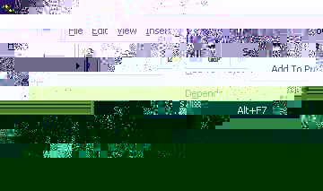
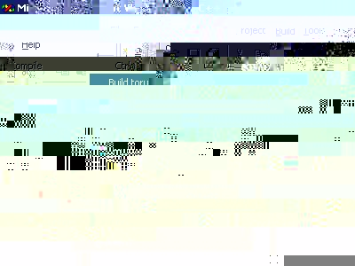

Now that you have VR Juggler installed and you have your environment all configured, it's time for the fun to begin. No, seriously. You are now ready to compile and run VR Juggler applications, and that's the whole point, right? This document explains how to compile the applications provided in the directory $VJ_BASE_DIR/samples.
Before reading any further, make sure you have already read the instructions on how to install VR Juggler and on how to configure your environment. That information will not be repeated, and it is assumed that you already know what we mean by $VJ_BASE_DIR. You should also have a basic understanding of how make(1) works, but in these examples, nothing more will be necessary than typing make on the command line. Refer to the make(1) manual page for more information about it.
There are two ways to compile VR Juggler applications: from the command line or with Microsoft Visual Studio. Compiling an application at the command line will work on all supported platforms including Win32. Using Microsoft Visual Studio will only work on Win32.
All the sample programs in $VJ_BASE_DIR/samples use the same basic steps to compile unless otherwise noted. Always refer to the top of the sample application's Makefile for information that may be specific to building that application. In general, though, all applications' makefiles are compatible with the standard version of the make(1) utility. This includes the nmake command provided with Visual C++.
The example used here will be the torus application found in $VJ_BASE_DIR/samples/ogl/torus. It is an OpenGL-based application that will compile and run on all platforms supported by VR Juggler. Begin by changing into the directory $VJ_BASE_DIR/samples/ogl/torus in a command shell.
To compile torus, simply enter the following:
% make
or on Win32 without Cygwin, enter:
% nmake
The compile process will then begin. If you have your system set up
properly, it will complete with an executable torus file (or
torus.exe on Win32) in the directory. Now that you have a
program compiled, it's time to
learn how to run it.
All of the OpenGL sample applications are shipped with pre-configured Microsoft Visual C++ workspaces. This is done to help new users get started with compiling VR Juggler applications and to give experienced Visual Studio users a starting place for their application development. To use the workspace for the torus application, begin by opening the folder containing the source code and double-clicking on torus.dsw.
Visual C++ will open, and the torus project will be loaded. The unexpanded class view will look like the following when Visual C++ first loads:
Before proceeding, the program arguments must be set. This is done using the ``Settings'' item under the ``Project'' menu:

Selecting this item opens the ``Project Settings'' dialog. In this window, choose the ``Debug'' tab. There will be an empty text entry field under the heading ``Project arguments''. Here, enter the full paths to the VR Juggler config files that will be used to run the torus application. The $VJ_BASE_DIR environment variable cannot be used here, unfortunately, so the full path to every file must be used. The following shows the beginning of the program arguments listing sim.base.config, sim.wand.mixin.config, and sim.displays.config:
Note that in this example, the / directory separator is used instead of \. This is not strictly required in this case, but doing it this way maintains consistency with other examples.
Once the program arguments are set up, compile the application. Under the ``Build'' menu, choose the ``Build torus.exe'' item as shown below:

Visual C++ will compile the application, and if you have everything configured properly on your computer, the compiling will complete successfully. Once it is done, execute the torus program by choosing the ``Execute torus.exe'' item from the ``Build'' menu, shown below.
In some cases, VR Juggler applications have makefiles that require the use of GNU make. This is always noted in the heading comments of Makefile in the application's directory. GNU make is free software that can be downloaded from the GNU Project. Some operating system vendors provide pre-compiled packages for easy installation of GNU software.
On the Win32 family of platforms, it is possible to develop VR Juggler applications as Visual C++ projects rather than using the command-line interface. We do not currently have an example of how to do this, but when it is available, it will be in the Programmer Guide.